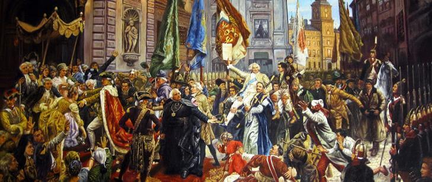

Konstytucja 3 maja uchwalona 3 maja 1791 roku była drugą na świecie i pierwszą w Europie nowoczesną konstytucją. Wprowadzała ustrój monarchii konstytucyjnej, trójpodział władzy oraz zniosła liberum veto i wolną elekcję króla[1][3].
Podstawowe Zasady Konstytucji 3 Maja:
- Religia (chrześcijańska) i wiara: Konstytucja respektowała religię chrześcijańską jako podstawę moralności społecznej.
- Suwerenność i wolność narodu: Podkreślała znaczenie suwerenności narodu i jego wolności.
- Pamięć o przodkach i tradycja: Zachowywała pamięć o przodkach i tradycji narodowej.
- Wolność wszystkich obywateli: Przewidywała zwiększenie wolności obywatelskich, choć z ograniczeniami w zależności od stanu.
- Możliwość swobodnego przemieszczania się: Zapewniała swobodne przemieszczanie się w granicach państwa.
- Naród wybiera rządzących krajem: Zniósł wolną elekcję króla i liberum veto, wprowadzając dziedziczność tronu.
- Sprawiedliwy sąd i brak osądu bez procesu: Gwarantowała sprawiedliwość sądownictwa i ochronę przed arbitralnymi osądami.
- Ochrona praw ludzkich: Przewidywała ochronę podstawowych praw ludzkich.
- Patriotyzm i walka o kraj w razie potrzeby: Zachęcała do patriotyzmu i obrony kraju w sytuacjach zagrożenia.
Konstytucja 3 maja była ważnym krokiem w kierunku modernizacji państwa polskiego, choć jej obowiązywanie było krótkie, zaledwie 14 miesięcy, do 23 listopada 1793 roku[3].